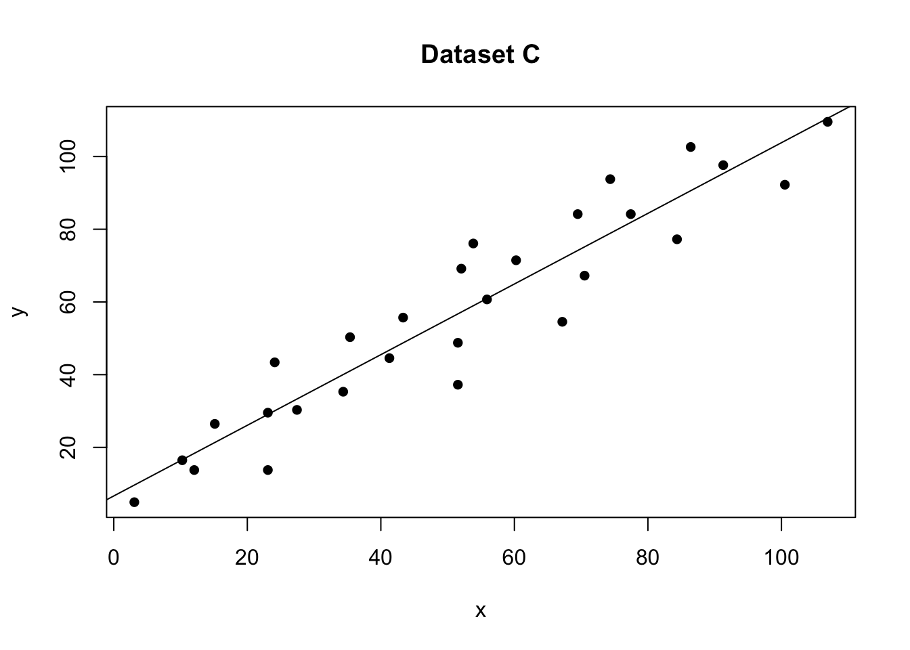
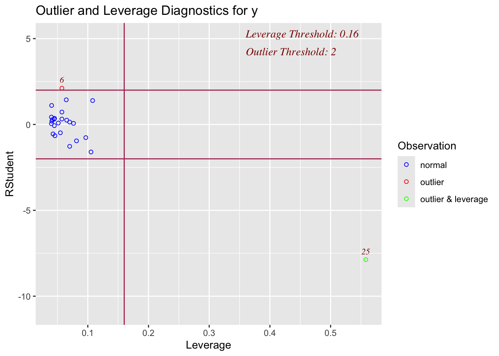

1 Outliers, high leverage & influential points
1.1 What are they
There are three key things to know when it comes to outliers:
An “outlier”
We use the word outlier to describe an observation (point on the scatterplot) that has a very different response from the predicted response from the model. E.g. it has a large residual.
A high leverage point
If a data point has an x-value that is extremely different (either too high or too low) from the rest of the data points, we call this a high leverage point. It might, or might not be an outlier.
An influential point
We call a data point an influential point if that data point has a considerable impact on the regression model. It likely has an unusual X AND an unusual residual. For instance, if the model fit changes considerably by removing a point, such data point is called an influential point. Influential points tend to be further from the mean.
1.2 How to find them
We can identify residuals via “residual vs leverage plots” and by looking at the ‘cooks distance’ for influential points.
1.2.1 Residual vs leverage plots
ols_plot_resid_lev(model)This takes all
1.3 Examples
No outliers, influential or high leverage points

No outliers, influential values or high leverage points
1.4 How to find them
1.4.1 Assessing outliers via visual inspection
The first way we can check for simple linear regression is to plot the data and take a look. Here are some examples that we can assess by eye which show the different effects.
No outliers, influential or high leverage points

No outliers, influential values or high leverage points
In the figure above, all of the data points follow the general trend of the rest of the data, so there are no outliers (in the y direction). And, none of the data points are extreme with respect to x, so there are no high leverage points. Overall, none of the data points would appear to be influential with respect to the location of the best fitting line. e.g. if we removed any one point, the line would probably be the same.
An outlier with no leverage

One outlier. The red-dashed line is the model including all the points. The black-solid line is the model with the red point removed
In the figure above, most of the data points follow the general trend of the rest of the data, but there is one clear outlier (one point that is unusual in the y direction). However, no point has an extreme x value, so there are no high leverage points. Overall, none of the data points would appear to be influential with respect to the location of the best fitting line. e.g.when we removed the red point,the line of best fit remains relatively stable.
A high leverage point that isn’t an outlier

No outliers,but one high leverage point. The red-dashed line is the model including all the points. The black-solid line is the model with the red point removed
In the figure above, most of the data points follow the general trend of the rest of the data, so there are no outliers (in the y direction). But one data points is extreme with respect to x. Overall, none of the data points would appear to be influential with respect to the location of the best fitting line. e.g.when we removed the red point,the line of best fit remained relatively stable.
An influential high leverage outlier

One influential high leverage outlier. The red-dashed line is the model including all the points. The black-solid line is the model with the red point removed
In the figure above, most of the data points follow the general trend of the rest of the data, with one clear outlier. This point also has high leverage abd appears to be very influential. e.g.when we removed the red point,the line of best fit changes hugely,
Here with a simple regression, we can easily see outliers. This is much harder when we have many predictors. So as well as examining the data by eye, we can use diagnostic plots.
1.4.2 Detecting outliers via plots
In lab 5, we mentioned two measures that we use to help identify outliers. They are:
- Residuals
- Studentized residuals (or internally studentized residuals) (often called standardized residuals)
First, briefly review these measures using this page: https://online.stat.psu.edu/stat501/lesson/11/11.3
OLSRR also offers several more plots and tests including :
- Cook’s D Bar Plot
- Cook’s D Chart
- DFBETAs Panel
- DFFITs Plot
- Studentized Residual Plot
- Standardized Residual Chart
- Studentized Residuals vs Leverage Plot
- Deleted Studentized Residual vs Fitted Values Plot
- Hadi Plot
- Potential Residual Plot
For now, we will focus on one of the most effective ways to assess residuals, the studentized residual/fits plot.
For example for our test data:
# read the data
data <- read.csv("index_data/neither.csv")
#calculate the model
model <- lm(y~x,data=data)
leverage <- ols_leverage(model)
# plot 1 (left hand side)
plot(data$x,data$y,pch=16,xlab="x",ylab="y",main="Dataset C");
abline(model)
# plot 2 (right hand side). Remember to choose your own ylim
ols_plot_resid_stud(model)There should be no absolute cut-off here (around 2-3 is a warning sign). Instead, take these as an opportunity to explore those points further. For example here is our plot with the residual:
# read the data
data1 <- read.csv("index_data/outlier.csv")
#calculate the model
model1 <- lm(y~x,data=data1)
# plot 1 (left hand side)
plot(data1$x,data1$y,pch=16,xlab="x",ylab="y",main="Dataset B");
abline(model1)
# plot 2 (right hand side). Remember to choose your own ylim
ols_plot_resid_stand(model1)
Here the plot is telling me that it thinks row 21 of the dataset might be an outlier
data1[21,]## x y
## 21 4 401.4.3 Detecting influential points
If a point is both an outlier AND has leverage, chances are it will be influential over the fit. OLSRR has a nice way of summarising both statistics.
For example here are our four plots together:
# read the data
data <- read.csv("index_data/neither.csv")
data2 <- read.csv("index_data/outlier.csv")
data2b <- data2[-21,]
data3 <- read.csv("index_data/leverage.csv")
data3b <- data3[-25,]
data4 <- read.csv("index_data/influential.csv")
data4b <- data4[-25,]
#calculate the model
model <- lm(y~x,data=data)
model2 <- lm(y~x,data=data2)
model3 <- lm(y~x,data=data3)
model4 <- lm(y~x,data=data4)
# Set up 4 sub-plots one next to each other
layout(matrix(c(1,2,3,4), 2, 2, byrow = TRUE))
plot(data$x,data$y,pch=16,xlab="x",ylab="y",main="Dataset A",col="black")
abline(model)
plot(data2$x,data2$y,pch=16,xlab="x",ylab="y",main="Dataset B",col="red")
lines(data2b$x,data2b$y,pch=16,type="p")
abline(model2)
plot(data3$x,data3$y,pch=16,xlab="x",ylab="y",main="Dataset C",col="red")
lines(data3b$x,data3b$y,pch=16,type="p")
abline(model3)
plot(data4$x,data4$y,pch=16,xlab="x",ylab="y",main="Dataset D",col="red",ylim=c(0,100))
lines(data4b$x,data4b$y,pch=16,type="p")
abline(model4)
Our four examples
and here are the OLSRR summary plots for each.
On the x-axis, you can see how high the leverage is. E.g. if it’s on the left it’s close to the mean x, if it’s on the right it’s far from the mean AKA it’s high leverage
On the y-axis, you can see the normalised residual value AKA how big is the residual, but plotted in terms of standard deviations away from the mean of y.
Compare plots 1,2,3 and 4 with the scatterplots above. See if you can identify which is which.
# model A
ols_plot_resid_lev(model)
# model B
ols_plot_resid_lev(model2)# model C
ols_plot_resid_lev(model3)# model D
ols_plot_resid_lev(model4)